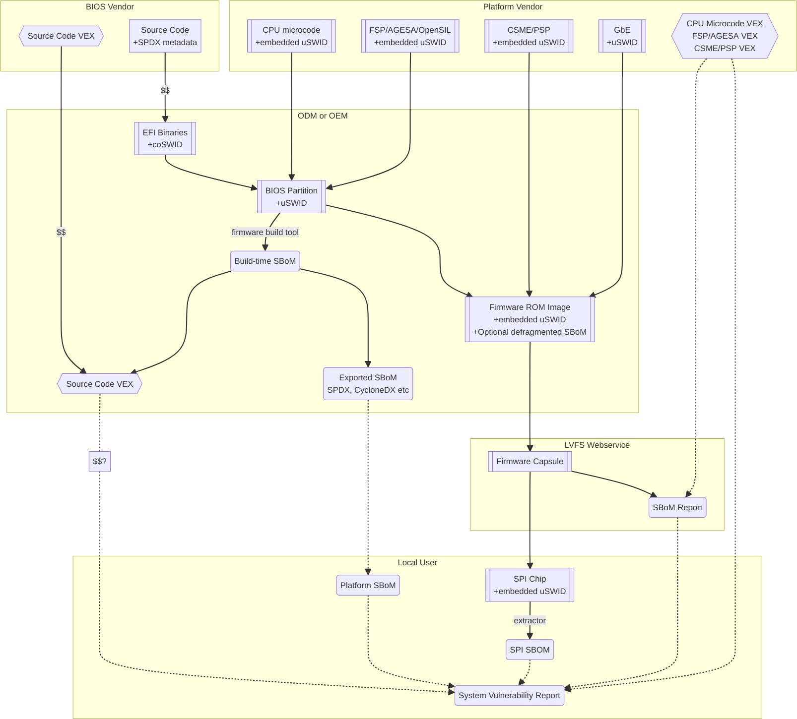

Firmware Embedded SBOM Specification 0.10¶
1. Acknowledgements¶
The Firmware Embedded SBOM Specification was developed in 2024 by Richard Hughes (Red Hat), Martin Fernandez (Eclypsium) and Adam Williamson (Red Hat).
Many thanks should also go to the UEFI SBOM Sub Team for all thier support in the creation of this document.
2. Revision History¶
Revision |
Date |
Description |
|---|---|---|
0.10 |
2024-FEB-21 |
Initial prerelease version. Imported text from LVFS. |
3. Introduction¶
3.1. Purpose and Scope¶
Due to the increasing number of high-profile supply chain attacks, it has become more important to record information about critical software such as system and peripheral firmware. For US companies, Executive Order 14028 “Improving the Nation’s Cybersecurity” and the Cyber Trust Mark now make providing an SBOM with this information a legal obligation for many companies.
It has traditionally been difficult to build firmware or platform SBOMs for systems due to the involvement of three separate entities: the Firmware Vendor that produces the bulk of the source code, the ODM (Original Design Manufacturer) that compiles it with other additional code and adds additional binaries, and the OEM (Original Equipment Manufacturer) that may add their own extensions and then distributes the firmware.
Most consumer laptop and desktop devices also have many other firmware blobs of firmware supplied for factory burn-in, e.g. fingerprint reader, SD card reader, touchpad, PCI retimer, Synaptics MST, Intel Thunderbolt, and many more – and these might not have any communication channel to the system firmware at all.
End-users do not buy “firmware” and any firmware deliverable will normally be included in a larger OEM per-device platform SBOM. At the same time, we also need to provide access to the runtime “current firmware SBOM” so that we can use newer technologies such as VEX to automatically identify systems that require security fixes.
This document explains why SBOM metadata for all constituent components should be embedded in all firmware, what should be included in it, and how it should be used as part of a larger platform SBOM that is useful to end-users.
The purpose of this document is to present a set of guidelines and best practices for vendors of firmware to provide Software Bill of Materials (SBOM) information to their clients and customers, to aid in vulnerability detection and license management.
With these sets of recommendations we feel sure that the resulting firmware SBOM will be useful to security teams and end-users alike. This would greatly benefit the entire firmware ecosystem and make the global supply chain measurably safer.
3.2. Definition of Terms¶
This document assumes a working knowledge of terminology related to firmware, and of software concepts such as “libraries” and “compilers”. The terms defined in this glossary may appear in italics as a reminder that they are being used as defined here.
Readers may be expecting to see terms like “IBV” (Independent BIOS Vendor), “ODM” (Original Design Manufacturer), “IFV” (Independent Firmware Vendor) and “OEM” (Original Equipment Manufacturer), but this document mostly avoids those terms. This is because those entities may, at any given moment and in any given commercial arrangement, be acting as component vendors, firmware vendors or platform vendors in the context of this document.
The keywords “MUST”, “MUST NOT”, “REQUIRED”, “SHALL”, “SHALL NOT”, “SHOULD”, “SHOULD NOT”, “RECOMMENDED”, “MAY”, and “OPTIONAL” in this document should be interpreted as described in RFC 2119.
- SBOM¶
Software Bill of Materials: A formal document which can be used to articulate what components are contained within a binary deliverable, and who is responsible for each part.
- Component¶
Any identifiable, discrete element of a firmware, including but not limited to any item that can be removed from, replaced in or added to a file volume or archive. This includes, but is not limited to, PE files, PEIMs, CPU microcodes, CMSE/PSP, FSP/AGESA, EC and OptionROMs – but SHOULD NOT include encryption keys or source code references. Each component may be provided as a precompiled binary by a component vendor to a firmware vendor, or it may be built from an independent source code tree by the firmware vendor.
- Component SBOM¶
A SBOM for a single component.
- Component Vendor¶
The party responsible for directly supplying a component for use by a firmware vendor in a firmware image.
- Firmware¶
Complete firmware image, which typically comprises multiple components..
- Firmware SBOM¶
The SBOM that represents all the components present in a single firmware and which could be generated in full or in part by combining component SBOMs.
- Firmware Vendor¶
The party responsible for building firmware, for use by the platform vendor.
- Platform SBOM¶
The SBOM that represents all the components in use on a real-world device. This may be equivalent to the firmware SBOM for single system firmware deployed on a device, or be a superset that includes metadata for multiple firmware (e.g. separate firmware for the system and for an attached touchpad or camera device).
- Platform Vendor¶
The party responsible for supplying a combined platform firmware image, typically comprising multiple firmware, for use on end-user hardware.
- Source Code¶
Text written in a program language (for example, C, assembly or Rust) that is compiled into binary object files and is not included verbatim in the firmware image.
4. Embedding¶
4.1. Introduction¶
When we talk about “embedding the SBOM”, we refer to the general idea of having SBOM metadata for all components in a given firmware included into the firmware image itself, either by providing a firmware SBOM or just by ensuring all components are represented in multiple component SBOMs.
Traditionally there has been pressure to keep firmware images as small as possible to minimize SPI storage space and to minimize the cost of the Hardware Bill of Materials. While this is a noble aim, sacrificing a few hundred bytes of space for an embedded SBOM has several advantages:
The SBOM does not need to be verified against a binary deliverable, it can be assumed to be “part of” the existing source artefact itself.
Vendors at any link in the supply chain that don’t care about or understand SBOMs do not “strip” the SBOM information.
The component SBOMs and/or firmware SBOMs from all the factory burn-in firmware images can be combined into one generated public platform SBOM that can be used for contractual or compliance reasons, without the need to request component or firmware SBOMs separately from each component vendor and firmware vendor.
Build-time automated embedding as part of CI/CD is recommended as part of the US Cyber Trust Mark initiative.
Some firmware build systems require the firmware blob and definition files to be put in a predefined place to generate a new firmware binary, which means non-embedded SBOM metadata may get out-of-sync with the blob.
If the SBOM is not embedded as a build artifact, a firmware engineer could rebuild the firmware capsule and forget to also regenerate or replace the SBOM in the new archive because it is a separate process that is hard to verify was done. If the SBOM is part of the image itself and automatically constructed as part of the deliverable, then it is impossible to forget. Sending the capsule or manually dumped ROM image to a QA engineer means they can know with almost complete certainty what blobs the image was built with. Embedding the SBOM makes doing the “right” thing easy and doing the “wrong” thing hard.
4.2. General Best Practices¶
All component vendors SHOULD embed an SBOM in the component image, formatted as described below. They MAY also create a more detailed detached SBOM (for instance referencing internal issues or source code filenames) that MAY be provided to the firmware vendor under NDA.
Firmware vendors SHOULD ensure embedded SBOM metadata is included for every PE binary and all additional components included in the firmware formatted as described below. This MUST be done by:
Including the SBOM for each component in a “defragmented” firmware SBOM created at build time, OR
Ensuring that each component contains embedded SBOM metadata, OR
Doing both of the above.
Component and firmware SBOMs SHOULD NOT reference any code or blobs which are not actually present, or which have been disabled in the system.
4.3. Embedded SBOM Formats¶
Firmware and component vendors MUST use the DTMF coSWID binary format with CBOR encoding when directly embedding SBOM sections in firmware. This format was chosen due to the small compiled size of data compared to SPDX (YAML or JSON) and SWID (XML), because the specification is freely available and because it can act as a superset format to both SPDX and CycloneDX.
4.4. Built Portable Executable (PE) Binaries¶
Most components in a typical firmware are compiled from source code and linked into PE binaries. These can be considered components whose vendor is the firmware vendor.
The firmware vendor SHOULD ensure that the SBOM metadata is automatically built and verified
at compile time and then added to the PE binary (in the .sbom COFF section), placed directly in
the “defragmented” firmware SBOM (see below), or both.
If for any reason this is not done automatically at compile time, the firmware vendor still MUST
ensure the SBOM is included in the binary .sbom COFF section or the “defragmented” firmware SBOM,
as required above.
For Tianocore/EDK2 firmware, there is an example
showing how to supplement the information in the .inf file with per-component and per-platform
overrides.
More specific recommendations on how to include additional artifacts into the .sbom section have
not been made as this will be heavily influenced by the existing proprietary build system and tools
used to build the image.
In the case where there is no natural place to store the component SBOM, it SHOULD be included as a per-volume metadata section. In this case it MUST include a uSWID magic header, as described in Components that are not Portable Executables (PE) below.
4.5. Precompiled Portable Executable (PE) Binaries¶
Firmware vendors do not have to compile all the PE binaries in the EFI volume from source code.
They may get pre-compiled and pre-signed binaries from third-party component vendors.
Component vendors SHOULD include the coSWID SBOM metadata for these components in a .sbom
COFF section which can be easily
included at link time.
These binaries MUST NOT use the magic header of uSWID (described below) as the PE header can be
parsed for the correct offset of the section.
An additional benefit of including the SBOM in a COFF section is that it is verified by the existing Authenticode digital signature.
If a firmware vendor uses a PE binary which does not have this embedded SBOM metadata, the firmware vendor MUST ensure SBOM metadata for the binary is present in a “defragmented” firmware SBOM, as described below.
4.6. Components that are not Portable Executables (PE)¶
When embedding SBOM metadata into any binary that is not a Portable Executable (PE), the component vendor MUST use the discoverable uSWID header so that software can easily discover the embedded SBOM. The 25-byte uSWID header is listed below:
uint8_t[16] magic, "\x53\x42\x4F\x4D\xD6\xBA\x2E\xAC\xA3\xE6\x7A\x52\xAA\xEE\x3B\xAF"
uint8_t header version, typically 0x03
uint16_t little-endian header length, typically 0x19
uint32_t little-endian payload length
uint8_t flags
0x00: no flags set
0x01: compressed payload
uint8_t payload compression type
0x00: none
0x01: zlib
0x02: lzma
The header length MAY be increased for alignment reasons (e.g. to 0x100 bytes), and in this case
the additional header padding MUST be NUL bytes.
The uSWID payload SHOULD be compressed with either zlib or LZMA, and a firmware image containing
the binary SHOULD pass validation using
uswid, for example:
$ uswid --load firmware.bin --validate
Found USWID header at offset: 0x18000
Validation problems:
dd4bbe2e40ba component: No software name (uSWID >= v0.4.7)
dd4bbe2e40ba entity: Invalid regid http://www.hughsie.com, should be DNS name hughsie.com (uSWID >= v0.4.7)
dd4bbe2e40ba entity: No entity marked as TagCreator (uSWID >= v0.4.7)
dd4bbe2e40ba payload: No SHA256 hash in FSPS (uSWID >= v0.4.7)
dd4bbe2e40ba link: Has no LICENSE (uSWID >= v0.4.7)
dd4bbe2e40ba link: Has no COMPILER (uSWID >= v0.4.7)
Although there are many tools for the distribution of the firmware SBOM to end-users, fewer tools exist to embed SBOMs into binary blobs, or to extract and merge SBOM components to build a firmware SBOM or platform SBOM. The python-uswid project is one such tool.
4.7. Defragmented firmware SBOM¶
A firmware image can contain a “defragmented” top-level firmware SBOM with a uSWID header,
produced at build time. If each component in the image has uSWID metadata, coSWID data in PE/COFF
.sbom sections and/or file volumes with uSWID metadata, the firmware vendor MAY omit this
firmware SBOM. If not, the firmware vendor MUST include it.
If the firmware SBOM is present:
It MUST contain all component SBOMs present in the image. This requirement is to ensure that tools do not need to combine and deduplicate component SBOMs with the firmware SBOM to provide all available information.
It SHOULD be compressed.
The components MAY also have component SBOMs as described in this document, to allow them to be analyzed in isolation.
5. Metadata Provided¶
5.1. Introduction¶
The purpose of an SBOM is to tell the end-user what components make up the software deliverable, and to give them information on where it was retrieved from or built. The questions end-users need to be able to answer are “what version of OpenSSL is included, and where did it come from” and “do I trust all the companies contributing code and binaries to this image”. Answering the what and who in a standardized way also allows us to use other specifications such as VEX.
In this section we use the term “SBOM component” to refer to a single ingredient within an SBOM (in a coSWID SBOM, this is a single tag).
Each SBOM component SHOULD describe either:
A single component, as defined in the glossary, or
An individually identifiable part of a component that has security and/or licensing implications, for example an image loading library used by a PE binary, or
Something that has security and/or licensing implications and was used to produce a component but is not present in the component itself, for example a compiler used to produce a PE binary, or
Any kind of defined logical component, for example “optional features” or “value add” options that may be matched from a VEX file (see below).
Each component MUST be represented by an SBOM component in its component SBOM, or the firmware SBOM if the component does not have its own SBOM. Libraries, compilers etc. SHOULD be represented by SBOM components (see the Component Relationships section below for more on this). Thus, a component SBOM or firmware SBOM MUST contain at least one tag, and MAY contain more.
For components or relationships that cannot currently be disclosed for legal reasons, vendors MAY
use the literal text REDACTED in place of the correct string value.
This is intended as a temporary measure while contracts or NDAs are renegotiated.
Any SBOM components with REDACTED text MAY be marked as incomplete and MUST fail validation.
5.2. Required Attributes¶
Each tag:
MUST have an identifier in the form of a GUID. See the Identifier section below for more details.
MUST have a non-zero length descriptive name, e.g. “CryptoDxe”, and SHOULD NOT include a file extension as this is already included in the SWID payload section.
- MUST have at least one entity entry and SHOULD have more than one, if more than one legal entity is involved in its creation, maintenance and/or distribution.
One entity MUST have the tag-creator role.
One entity MUST have the software-creator role, and it MAY be the same entity as the one specified in tag-creator. See the Vendor Entity section below for details.
In specifying entity roles, vendors SHOULD be careful not to make business relationships public that are not already in the public domain.
MUST have a version, which SHOULD be a semantic version like
1.2.3.SHOULD have a revision if the component has been modified by downstream patches. If supplied the revision SHOULD have the form``{release}.{dist}`` . The
releaseis an unsigned integer, anddistis a lowercase short vendor name, e.g.`1.hughskior999.redhat.- MUST have a file hash that is generated from all the source files, if it is a binary built from source code or other constituent parts. This MUST be either a SHA-1 or SHA-256 hash.
This is what uSWID calls a “colloquial version.”
- SHOULD have a source control tree hash which MUST be either a SHA-1 or SHA-256 hash (e.g. the output from
git describe), if it is a binary built from source code under source control. This is what uSWID calls an “edition.”
- SHOULD have a source control tree hash which MUST be either a SHA-1 or SHA-256 hash (e.g. the output from
MAY or MUST include one or more link entries expressing relationship(s) to another SBOM component. See the Component Relationships section below for details, including when link entries are REQUIRED and when they are OPTIONAL.
The file hash SHOULD include the hashes of the source code files used to construct the binary, such as .c and .h files.
Any library statically-linked with the PE binary SHOULD be included as an additional SBOM component.
5.3. Identifier¶
In some cases, the most obvious identifier to use for the SBOM component is already in a GUID form – for instance using the UEFI GUID defined in an official specification or reference implementation.
In other cases, like GCC (where there is no GUID defined), vendors MUST use a swid: prefix to generate a GUID that is linked within the object.
Using a GUID is deliberate because it can obscure internal references, and can be encoded as a 128-bit number in coSWID.
Example component IDs could include:
swid:intel-microcode-706E5-80swid:gccf43cae5a-baea-5023-bc90-3a83cd4785cc which is UUID(DNS, “gcc”)
Some of this information is already present in projects such as EDK2 in the various .inf files.
Firmware vendors and component vendors SHOULD consult with any upstream projects before deciding identifier GUIDs.
Forked components modified by the firmware vendor MUST have an identifier different from the upstream component identifier.
The identifier GUID:
SHOULD NOT include the component version, file or tree hash or revision.
MAY allow comparing some components against SBOMs from different vendors.
5.4. Vendor Entity¶
An “entity” describes a party responsible for the creation, maintenance, and/or distribution of a firmware or component. An entity can perform one or more roles (e.g. creator, maintainer and distributor), and multiple entities (even with the same role) can be defined for each component.
For instance, Intel FSP is created by Intel, maintained by Intel, and distributed by Intel. A modified DXE might originally be created by Intel in EDK2, but then be modified and maintained by AMI and distributed by Lenovo. In this case, the component for the FSP would have only one entity entry, but the component for the DXE would have three entity entries.
For each entity entry:
The name MUST be the legal or common-use name of the open-source project, the component vendor, the firmware vendor, or the platform vendor.
The registration ID MUST be the DNS name of the named legal entity, or the DNS name of the upstream project URL in the case of open-source projects.
5.5. Component Relationships¶
SBOM component links are used to supply additional information about how components relate to each other. They also include any required licensing information, statically linked libraries and links to additional resources. Libraries that may be matched from a VEX file (for instance, where a third-party library has previously security vulnerabilities) SHOULD be included as a component, but other internal libraries MAY be omitted. SBOM components MAY use multiple links, even of the same relationship type.
- SBOM components representing open-source software MUST include one or more license link(s) indicating all licenses that apply.
The URL for each license link MUST be the SPDX license URL, e.g.:
https://spdx.org/licenses/LGPL-2.1-or-later.htmlThe
licenserelationship type MUST be used.All open-source code SHOULD be identified with its own SBOM component to allow verification of license compliance.
- SBOM components representing non-open-source software SHOULD include one or more license link(s) indicating all licenses that apply.
The URL for each license link MUST be a public webpage with the full text of the proprietary license.
The
licenserelationship type MUST be used.
- SBOM components representing compiled binaries SHOULD reference SBOM components representing the compiler and linker used to build the binary where possible.
The
see-alsorelationship type MUST be used, and theswid-prefixed URL MUST be an existing component identifier defined in the component or firmware SBOM.
- SBOM components representing compiled binaries SHOULD reference SBOM components representing libraries that are linked into the binary and that may be referenced in VEX documents (see below).
The
requiresrelationship type MUST be used, and theswid-prefixed URL MUST point to an existing component in the SBOM.
- SBOM components MAY include a link specifying the source URL where they can be downloaded. e.g.
https://github.com/intel/FSP/AmberLakeFspBinPkg The
installationmediarelationship type MUST be used.
- SBOM components MAY include a link specifying the source URL where they can be downloaded. e.g.
6. Information Flow¶
6.1. Introduction¶
The figure below shows the possible flows of SBOM information from the component vendor(s), firmware vendor(s) and/or platform vendor to the end-user. VEX data (see below) is used to notify the end user about security issues of components referenced by the SBOM.
Depending on existing business relationships, the firmware vendor (the ODM) may take on some of the responsibilities of the platform vendor (the OEM) or the component vendor (the IBV).
Dumping the SPI contents using an external SPI programmer or OS interface allows the end-user to extract a “current” firmware SBOM. This allows analyzing the image without having access to a public SBOM provided by the platform vendor or a vendor neutral firmware provider like the Linux Vendor Firmware Service (“LVFS”).
To comply with Executive Order 14028, OEM vendors SHOULD also publish either the SPDX or CycloneDX SBOM export as a downloadable file on the public device webpage. The SHA-256 checksum of the generated SBOM SHOULD be used as the unique collection ID for the component and firmware SBOMs. This enables the SBOM to be found using a search engine even if the original OEM has been renamed or the device HTML URI has been modified.
6.1.1. Using VEX Rules¶
Vulnerability Exploitability eXchange (VEX) allows a component vendor to assert the status of a specific vulnerability in a particular firmware. VEX can have any of the following “status” values for each component:
- Not affected
No remediation is required regarding this vulnerability.
- Not affected
No remediation is required regarding this vulnerability.
- Affected
Actions are recommended to remediate or address this vulnerability.
- Fixed
Represents that these product versions contain a fix for the vulnerability.
- Under Investigation
It is not yet known whether these product versions are affected by the vulnerability.
Only the entity with the source code tree and the config files used to build it (usually the IBV or ODM) has all the information required to know whether a given EFI binary is affected by a specific vulnerability.
If our aim is to find out if a specific firmware is vulnerable to a specific security issue, here are only three ways to solve this without access to a complete SBOM:
The end-user asks the component vendor, who finds the firmware version, checks out the source code for that revision, then looks for affected code, and replies with the answer.
The component vendor proactively passes detailed vulnerability status and remediation info to the immediate downstream supply chain partner, who then in turn proactively passes this down to each customer.
The component vendor shares the code and the config to the customer and assumes the customer can work it out themselves.
We consider these ways to be clearly unsatisfactory. Therefore, both component vendors and platform vendors SHOULD upload the SBOM to a trusted neutral entity, allowing multiple customers and end-users to query the information. The neutral entity MAY also process additional trusted VEX data directly from component vendors, which allows firmware to automatically be marked as affected or not affected without direct involvement of the firmware vendor.
Vendors writing VEX rules MUST use the same identifier as used in the SBOM. VEX product IDs are specified using PURL, and the GUID MUST be used as the component name. Where a semantic version is required it MAY also be specified.
For example:
pkg:dca533ab-2c1f-4327-9b2b-09ac19533404pkg:dca533ab-2c1f-4327-9b2b-09ac19533404@15.35.2039
Further details about using Vulnerability Exploitability eXchange (VEX) standards such as OpenVEX with embedded firmware SBOMs will be provided in the future.
7. Appendix¶
7.1. External SBOM Metadata¶
This document strongly encourages vendors to embed the SBOM metadata into the respective binaries, but there are two situations where externally referenced SBOM metadata would be allowed:
Where the binary is loaded onto critically space-constrained devices, for example microcode that is loaded into the processor itself.
Where only later newer versions of the component have embedded SBOM metadata, and backwards compatibility is required with older revisions.
In these cases, the component vendor MUST provide “detached metadata” from the same source (or in the same archive file) as is used to distribute the immutable blob.
As the SBOM metadata is detached, vendors MUST ensure that the files do not get “out of sync” and are updated at the same time in the firmware source tree. Detached metadata MUST always contain the SHA256 hash value of the binary as evidence to allow validation and MAY be signed using a detached signature if the archive is not already signed. The public key SHOULD be distributed on a keyserver or company website for verification.
7.2. Wasted Space Concerns¶
Some vendors have expressed concerns about “wasted” space from including the SBOM data in the binary image. For source components such as CPU microcode, a single component and vendor entity would use an additional ~350 bytes (zlib compressed coSWID), compared to 48kB for the average EFI binary and 25kb for a typical vendor BGRT “splash” logo.
The uswid command can automatically generate a complete “worst case” platform SBOM with 1,000 plausible components.
This SBOM requires an additional 140kB of SPI flash space (uncompressed coSWID), or 60kB when compressed with LZMA.
For reference, the average free space in an Intel Flash ROM BIOS partition is 5.26Mb, where “free space” is defined as a greater than 100KiB stream of consecutive 0xFF’s after the first detected EFI file volume.
Adding the SBOM as embedded metadata would use 1.1% of the available free space.
Other firmware ecosystems such as Coreboot also now include SBOM generation as part of the monolithic image.
7.3. Getting the Runtime SBOM¶
The ACPI SBOM ACPI table may be used in the future to return the coSWID formatted binary SBOM data from any device exporting an ACPI callable interface.
Further details will be provided when the SBOM table has been implemented.
If the platform allows direct access to the system SPI device, then the entire firmware image can be dumped to a local file and analyzed by tools such as uswid.
7.4. Converting the SBOM¶
The embedded SBOM SHOULD be converted it into one or more SBOM export formats before publication.
This can be achieved easily using tools such as uswid.
For example, this can be used to produce two JSON files in CycloneDX and SPDX formats from the platform image:
$ uswid --load rom.bin --save cyclonedx-bom.json
$ uswid --load rom.bin --save spdx.json
7.5. Signing the SBOM¶
The embedded SBOM MAY be signed, and MAY also be included in the firmware checksum. If the firmware component is signed then the SBOM SHOULD be included in to the signature. The signing step is optional because a malicious silicon provider can typically do much worse things (e.g. adding or replacing a DXE binary) than modify the SBOM metadata.
7.6. Using the LVFS¶
When firmware is uploaded to the LVFS it automatically extracts all available SBOM metadata and generates a HTML page with SPDX, SWID and CycloneDX download links that can be used for compliance purposes. The LVFS MAY allow vendors to upload firmware or platform SBOMs without uploading the firmware binary. Other services like Windows Update may offer this service in the future.
The VEX “trusted neutral entity” MAY also be the LVFS, even for firmware updates not distributed by the LVFS. Uploading VEX data requires vendors to register for a LVFS vendor account which is available at no cost.